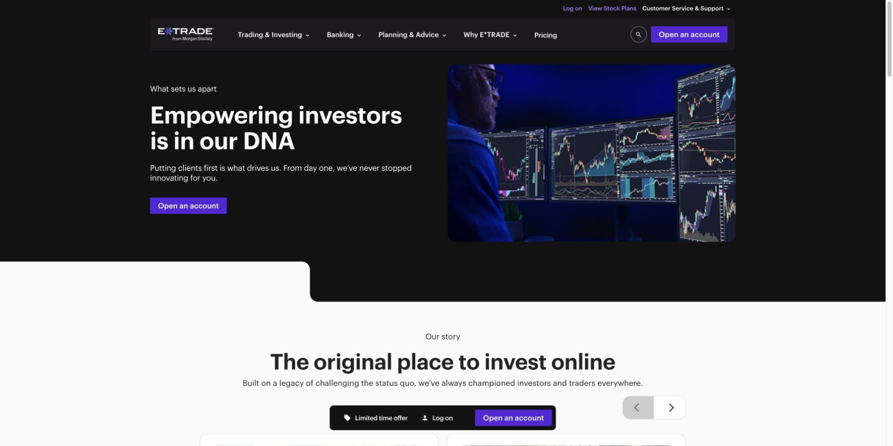
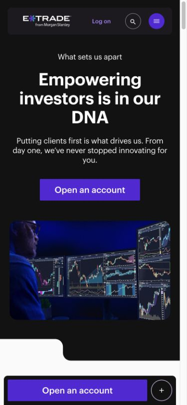

Visual block development completed locally on October 13, 2026. Content was captured October 12 and checked against the public site again during the style review. Code and DA content publish separately.
Development completed
Area
Implemented change
Typography and spacing
Measured Graphik sizes, weights, line heights and tracking; card gutters, padding, radii and borders; mobile Accounts typography (46/52 heading and 17/24 copy) and legacy tab-card typography.
Page composition
Split hero mobile spacing, pricing introduction columns, banking disclaimer order, section transitions, award alignment, compact tax banner, article media and promo overlays.
Actions and interactions
Standalone and formatted links decorate consistently while inline links remain inline. Correct primary, outline and secondary treatments; calculator lock icon; FAQ heading/intro/CTA order; last carousel dot remains selected.
Welcome Back blocks
Responsive campaign/login layout, legacy campaign card treatment, market chart grids and right-side price axis, time labels, quote-search panel and Top Five typography. Sample labels remain visible when sample data is used.
Defensive decoration
Optional/empty cells, bare links and imported heading wrappers are handled without losing rich text, disclosure markers or authored tracking. Local review owns its rendering lifecycle and avoids duplicate decoration.
Checks: 75 regression tests passed; JavaScript and stylesheet lint passed. All six prepared pages were checked at 1800px desktop, 768px tablet and 390px mobile, with every block loaded, no horizontal overflow and no failed loaded images. See the recorded checks.
The demo URLs still serve their existing authored content until the DA updates are saved and previewed. These visual checks use the prepared content with the current local code. Exact visual equality requires matching content, media and data; the sign-in identity service and live data connections remain external integration dependencies.
What to author
Open the copyable DA tables for each page below. Replace the outdated page body with the supplied tables, section breaks, variants and after-block paragraphs. Merge the supplied Metadata into one table while preserving unrelated page settings.
Select/upload the supplied source images in DA and use DA media URLs. Preserve alternative text, rich headings, superscripts, bold account subtitles and all CTA tracking parameters. For the Home animation, use the MP4 link in the Hero Dark Media row.
Save and preview the supplied semantic disclosure fragments and page-specific disclosure-set JSON. Keep claim IDs matched to their fragments; do not substitute the previous a–z IDs by displayed number.
Save and preview the page, inspect its .plain.html markup, then compare desktop and mobile in the current code branch preview. Publish content after the campaign terms and service connections are verified.
Campaign rates and dates in the pack are the captured source terms. Update a changed claim and its disclosure together. Checking and market sample values in local review are demonstration data; their production connections require the configured service or approved proxy.
Replace the IPO hero with the current savings campaign, including the MP4 in the Media row and its text description. Keep the savings banner in the same dark section.
Use all ten funding tiers in Widget Calculator. Pricing has six tiles (five prices plus the offer tile); Cards Product has two banking cards. Place the banking disclaimer after those product cards.
Use three awards and six FAQs. The prepared Floating Dock includes the exact savings offer, login and account-opening tracking links.
Use the AI cybersecurity campaign image, heading and copy in Welcome Hero. The image spans the campaign and login area on desktop; the login area is white on mobile.
Author the two campaign cards as Cards Icon (Welcome Back), using the supplied named icons. Add Market Ticker, Market Overview and Market Top Five in the supplied order.
Keep Market Data Mode = local for the sample review. Enable live mode only with the configured, working service or approved proxy. The embedded login presentation hands off to the real sign-in page; the supported identity integration requires separate domain configuration.
Exact block sequence and variants
Welcome Hero
Market Ticker
Cards Icon (Welcome Back)
Market Overview
Market Top Five
Disclosure set: /disclosures/sets/welcome-back-current. The copyable tables panel contains the set JSON and all 1 referenced fragments.
Use seven Tabs Accounts rows: Most Popular / Brokerage / Retirement / Managed Portfolios / Small Business Retirement / Bank / Cryptocurrency, with 6 / 3 / 6 / 2 / 4 / 4 / 1 account cards respectively. Remove the old extra banners.
Keep each account subtitle bold, the supplied action order, and the checking Rate Settings cell with its checking-rate binding. Promotional savings and CD terms are authored claims, separate from the checking base-rate connection.
Use Accordion FAQ (Pricing) with five questions. Use the supplied semantic disclosure IDs and our-accounts-current disclosure set.
Exact block sequence and variants
Hero Light
Tabs Accounts
Section introduction
Accordion FAQ (Pricing)
Disclosure set: /disclosures/sets/our-accounts-current. The copyable tables panel contains the set JSON and all 18 referenced fragments.
Use the supplied Hero Product asset, short copy, separate offer heading and terms. Keep the struck-through $1,000 beside $1,500.
Use six Cards Pricing (Text Links), the offer banner, three numbered reasons, the dark media-first Power E*TRADE Pro feature, and Columns Feature (Light, Award) for the left-aligned NerdWallet logo and secondary awards link.
Use four articles, seven FAQs and the prepared brokerage Floating Dock.
Exact block sequence and variants
Hero Product
Section introduction
Cards Pricing (Text Links)
Banner Offer
Section introduction
Cards Numbered
Columns Feature (Dark, Media First, Outline)
Columns Feature (Light, Award)
Section introduction
Cards Article
Section introduction
Accordion FAQ
Floating Dock
Disclosure set: /disclosures/sets/brokerage-current. The copyable tables panel contains the set JSON and all 8 referenced fragments.
Use Hero Dark (Split). Author six life-event/offer cards, with the external Read more paragraph after Cards Icon (Planning).
Add the retirement readiness feature, four Cards Icon (Tools), Banner Offer (Compact), three action cards and nine FAQs. Keep the supplied advisors and taxadvice disclosure references.
Use the prepared retirement Floating Dock. Resolve the source campaign inconsistency before publishing: the offer tile says 06/30/26, while its disclosure says 10/31/26. Update the claim and disclosure together.
Exact block sequence and variants
Hero Dark (Split)
Section introduction
Cards Icon (Planning)
After-block copy / action
Columns Feature (Dark, Media First)
Section introduction
Cards Icon (Tools)
Banner Offer (Compact)
Section introduction
Cards Article
Section introduction
Accordion FAQ
Floating Dock
Disclosure set: /disclosures/sets/planning-current. The copyable tables panel contains the set JSON and all 4 referenced fragments.
Use Hero Dark (Split, Balanced) with the supplied trading-screen image and copy.
Use all seven dated Carousel Story cards from 1982 through 2025, six audience cards in the dark section, and three Cards Article (Promo) image cards with white inset text panels.
Use the prepared brokerage Floating Dock, including the live tracking parameters.
Exact block sequence and variants
Hero Dark (Split, Balanced)
Section introduction
Carousel Story
Section introduction
Cards Icon
Section introduction
Cards Article (Promo)
Floating Dock
Disclosure set: /disclosures/sets/why-etrade-current. The copyable tables panel contains the set JSON and all 4 referenced fragments.
Desktop and mobile proof


Local artifacts only. No DA documents, production content, or Git remote were changed by this review.